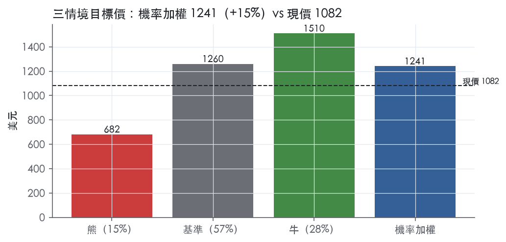
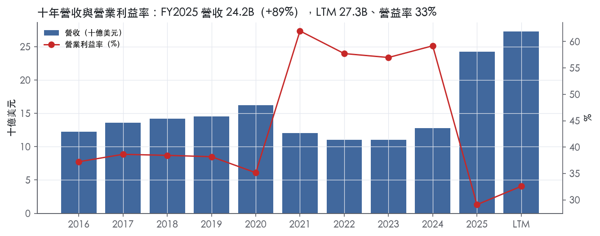
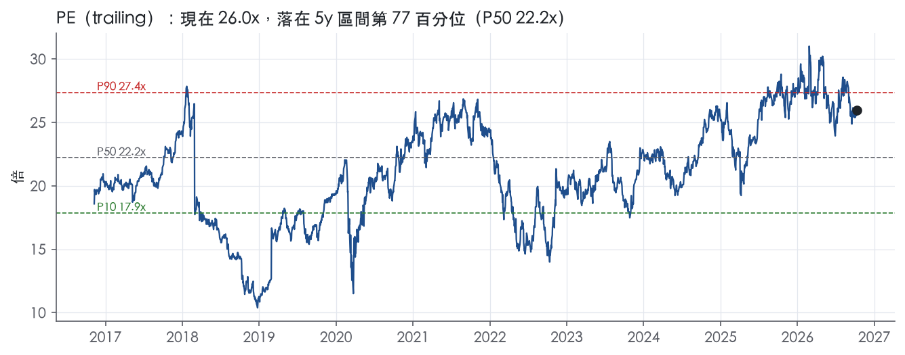
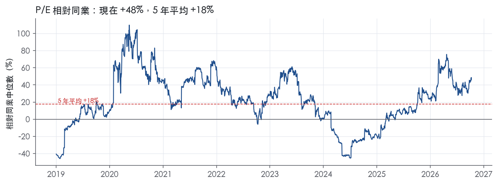
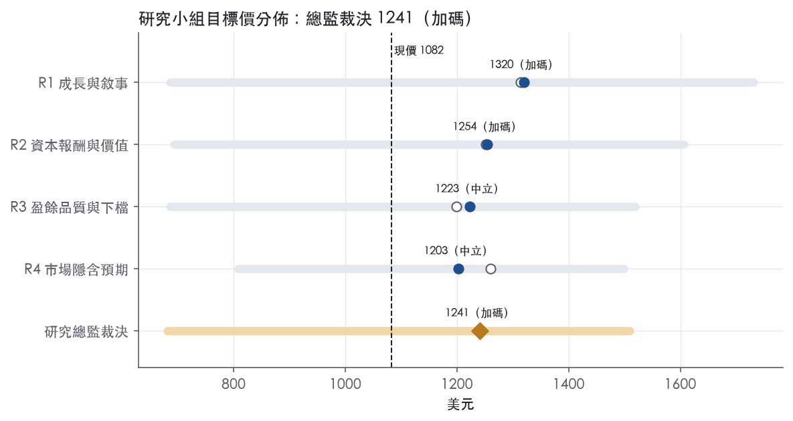
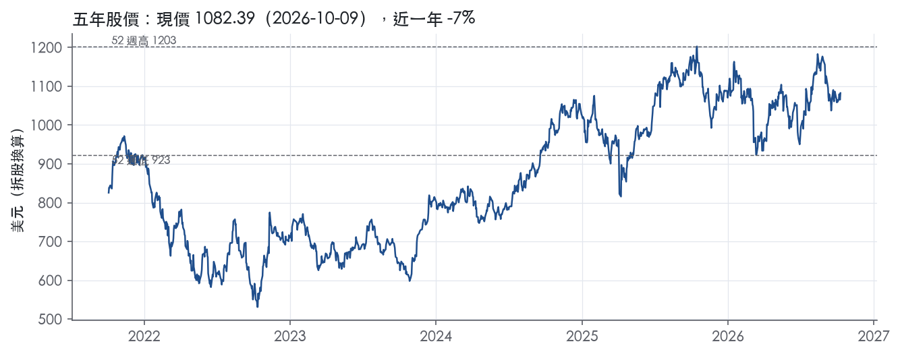

評等總表 › 金融 › BLK
盈餘修復抵倍數回歸，溫和看多｜評等 加碼｜目標價 1241
| 評等 | 加碼（邊界，鄰近中立） |
| 12 個月目標價 | 1241 美元 |
| 現價 | 1082.39 美元（2026-10-09） |
| 預期報酬 | 股價 +14.6%＋股息 2.1%＝總報酬 +16.7%；同業籃門檻 10.2%，超額 +6.5% |
| 估值方法 | P/E 21.0x，套在第 5–8 季的EPS（也就是一年後的未來四季） |
| 三情境 | 熊 682／基準 1260／牛 1510 |
| 研究流程 | 四位研究員兩輪辯論＋研究總監裁決 |
| 資料來源 | SEC EDGAR XBRL、Tiingo、FRED（全免費） |
盈餘修復抵倍數回歸，溫和看多（研究總監裁決，四位研究員兩輪辯論後）
評等 加碼（邊界，鄰近中立）｜12 個月目標價 1241 美元（總監三情境機率加權 1243 與研究員中位數 1239 各半）｜現價 1082.39（2026-10-09）
預期報酬：股價 +14.6%＋股息 2.1%＝總報酬 +16.7%。同業籃門檻 10.2%，超額 +6.5%，離中立的分界不到三個百分點，屬邊界評等（落在其他級距的機率約四成）。
估值方法：P/E 21.0x，套在第 5–8 季的EPS（也就是一年後的未來四季）。三情境：熊 682（15%）／基準 1260（57%）／牛 1510（28%）。
什麼會讓研究總監改變看法：Q3 2026 對帳表若顯示 GAAP 與調整後差距大半是會到期的留任獎酬，op_margin_y2 上修到 37%、倍數可到 P75；若 Q4 2026 稀釋股數年增回到 3% 以上或有機基礎費用成長跌破 4%，倍數降到 P50 18.4x 並轉中性。
| 過去四季（實際，FY2026Q2） | 未來四季 | 第 5–8 季 | 第 9–12 季 | |
|---|---|---|---|---|
| 營收（B） | 27.3B | 30.3B | 33.0B | 35.3B |
| 營收成長 | 95.6% | 11.0% | 9.0% | 7.0% |
| 營業利益率 | 32.6% | 35.0% | 35.5% | 36.0% |
| EPS（美元） | 41.69 | 53.99 | 59.99 | 65.42 |
| EPS 成長 | -0.1% | 29.5% | 11.1% | 9.1% |
| 每股股息（美元） | 21.88 | 21.88 | 21.88 | 21.88 |
| P/E（現價） | 26.0x | 20.0x | 18.0x | 16.5x |
| 股息殖利率（現價） | 2.1% | 2.0% | 2.0% | 2.0% |
過去四季為申報數字；預測為研究總監的假設、程式計算。倍數與殖利率都用現價計算，用來看現價對應各期獲利的高低。
| 情境 | 機率（歷史） | 故事 | 未來四季營收成長 | 第 5–8 季營益率 | 倍數 | 目標價 | 股價漲跌 |
|---|---|---|---|---|---|---|---|
| 熊 | 15%（12%） | 2022 式股市修正壓縮費基、績效費歸零、私募 mark-down，攤銷固定使營益率去槓桿；對應風險表第一條（市場下跌侵蝕 AUM 與基礎費用）與第三條（私募市場估值與流動性） | -6.0% | 31.5% | 16.0x | 682 | -37.0% |
| 基準 | 57%（56%） | HPS 進入基期後營收成長回到 11%／9%，GAAP 營益率因 FY2025Q4 低點退出與整合費用遞減修復到 35.5%，攤銷長存，股數因回購小幅下降，倍數不擴張 | 11.0% | 35.5% | 21.0x | 1260 | 16.4% |
| 牛 | 28%（32%） | 股市續漲加有機基礎費用維持 8% 以上，調整後營益率守在歷史上緣 46.8%，倍數到前瞻帶 P75 | 17.0% | 37.0% | 22.5x | 1510 | 39.5% |
目標價由程式依研究總監的驅動與倍數計算；機率由研究總監給定。括號內是歷史頻率：把這檔股票過去十年 12 個月報酬的波動形狀，置中在基準情境，結果落在各情境附近的比例。

四位研究員用不同方法各自估值，回應研究總監的質疑後交出第二輪，最後由總監逐點裁決。各研究員的主張見第七章，裁決理由見第八章，完整論證見《研究底稿》。
| 立場（一輪→二輪） | 加權目標價（一輪→二輪） | 評等（一輪→二輪） | 第二輪倍數 | 熊～牛目標價 | |
|---|---|---|---|---|---|
| R1 成長與敘事 | 看多→看多 | 1314→1320 | 加碼→加碼 | 21.5x | 686～1732 |
| R2 資本報酬與價值 | 中性→看多 | 1252→1254 | 加碼→加碼 | 21.0x | 693～1606 |
| R3 盈餘品質與下檔 | 中性→中性 | 1199→1223 | 中立→中立 | 21.0x | 686～1519 |
| R4 市場隱含預期 | 看多→中性 | 1261→1203 | 加碼→中立 | 20.0x | 808～1499 |
| 研究總監裁決 | 看多 | 1241 | 加碼 | 21.0x | 682～1510 |
目標價由程式依各自的驅動與倍數計算；評等＝機率加權總報酬 − 同業籃門檻。
BlackRock是一家全球最大的投資管理公司，2025年底管理14.0 trillion美元資產（即14,041,518M美元）¹，橫跨公開市場、私募市場與技術服務三大業務線。公司以約24,900名員工、分布逾30個國家，服務逾100個國家的客戶¹。公司不從事可能與客戶利益衝突的自有交易活動，並以受託人身分管理客戶資產¹。客戶涵蓋免稅機構（如退休金計畫、慈善基金會）、官方機構（央行、主權財富基金）以及應稅機構（保險公司、金融機構、企業及第三方基金發起人）¹。
BlackRock的產品線以資產類別劃分為Equity、Fixed Income、Multi-asset、Alternatives、Digital Assets、Currency and Commodities與Cash Management¹。Equity是最大類別，2025年底AUM達7,793,875M美元，佔長期AUM 61%、佔長期基礎費用與證券借貸收入50%¹。Fixed Income AUM為3,272,021M美元，佔長期AUM 25%、佔收入22%¹。Multi-asset AUM為1,223,625M美元，佔長期AUM 9%、佔收入8%¹。Alternatives（含私募市場與流動性另類投資）AUM為423,614M美元，僅佔長期AUM 3%，但貢獻17%的長期基礎費用與證券借貸收入，顯示費率明顯高於指數型產品¹。ETF業務iShares是全球最大ETF發行商，2025年底AUM達5,467,710M美元，佔長期AUM 42%、佔收入45%¹；2026年第二季iShares AUM進一步突破6 trillion美元（即約6,000,000M美元）²。
技術服務與訂閱業務以Aladdin Enterprise為核心，另含eFront、Aladdin Wealth、Preqin、Cachematrix等產品¹。2025年技術服務與訂閱收入為2,000M美元，年增24%，年度合約價值（ACV）年增31%（含Preqin）、剔除Preqin後年增16%¹。公司於2025年3月以約3,200M美元現金完成Preqin收購¹。私募市場方面，2025年7月完成的HPS Transaction為公司新增165,000M美元客戶AUM與118,000M美元計費AUM，是近年最大的另類平台併購¹。截至2025年底，公司尚有約91,033M美元非計費、未投資承諾資本待未來部署，不計入AUM或淨流量¹。整體而言，BlackRock的分部結構是「規模型指數＋高費率主動／私募＋訂閱制技術」三層疊加，指數與ETF貢獻規模、主動與另類貢獻費率、技術服務提供非資產管理的經常性收入。
按客戶類型，機構投資者仍是BlackRock最大的客戶群，2025年底機構AUM達7,272,499M美元，佔總AUM約52%（dv.推算）。零售客戶AUM為1,299,836M美元，佔長期AUM 10%、佔長期基礎費用與證券借貸收入25%¹，顯示零售客戶的費率貢獻明顯高於其AUM佔比。ETF客戶類型AUM為5,469,183M美元，單獨列示因交易所交易無法完全追蹤終端投資者¹。機構客戶中，退休金、基金會與捐贈基金合計佔長期機構AUM 62%（3,900,000M美元，即3.9 trillion美元規模，原文以trillion表示）¹，其中約定義提撥計畫（defined contribution）占退休金總AUM的2,100,000M美元¹。保險公司客戶AUM為720,000M美元，佔長期機構AUM 12%¹。
地區分布上，Americas為最大市場，佔總AUM 68%、佔總基礎費用與證券借貸收入67%¹；EMEA佔總AUM 25%、佔收入28%¹；Asia-Pacific佔總AUM僅7%、佔收入5%，2025年還出現淨流出62,000M美元，主因單一客戶自低費率機構指數產品部分贖回¹。通路上，零售投資者主要透過券商、銀行、信託公司、保險公司及獨立財務顧問等中介機構服務¹；約60%員工在美國以外地區服務當地客戶，約35%總AUM管理對象為美國以外客戶¹。地區集中度高、Americas獨佔近七成收入是BlackRock相對同業的特徵之一。
FY2025Q3營收6.51B美元，年增25.2%，營業利益率30.0%（is.revenue/dv計算，季表）。FY2025Q4營收按年度倒推約7.01B美元（推導值，資料包標示為推導），營益率23.7%。FY2026Q1營收6.70B美元，年增27%，GAAP營業利益率42.0%、調整後營業利益率44.5%³；當季總淨流入130B美元，過去十二個月淨流入744B美元、有機基礎費用成長10%³；iShares創史上最佳第一季，淨流入132B美元³。FY2026Q2營收7.08B美元，年增31%，GAAP營業利益率34.7%、調整後營業利益率45.9%，為近五年最高²；當季淨流入192B美元、有機基礎費用成長8%，上半年淨流入創紀錄達321B美元；iShares AUM突破6 trillion美元，三年內大致翻倍；技術服務與訂閱收入年增13%、ACV年增15%²。公司在Q2新聞稿中提高2026年全年計畫股票回購至2B美元，並將計畫季度回購規模上調至550M美元²。整體趨勢是：營收加速成長、調整後利潤率持續擴張，淨流入規模與有機成長率逐季墊高。
公司將自身定位為「同時是領先的公開市場管理人、規模化的私募市場平台、以及全球技術公司」²。管理層認為差異化競爭優勢來自：長期的客戶選擇模式（提供指數、主動、私募市場及整體投資組合解決方案）、對風險調整後最佳回報的投資表現追求、以研究數據分析為核心的投資流程、全球佈局與本地化服務能力、以及對Aladdin、Aladdin Wealth、eFront、Preqin等技術產品的長期投入¹。公司強調其正受惠於「ETF結構性轉移、私募市場（基建、私募信貸）配置增加、外包與整體投資組合解決方案需求上升、固定收益再配置預期、對高表現主動策略的需求、永續投資策略興趣，以及退休與收益議題的持續關注」等產業趨勢¹。CEO Laurence Fink在最新財報中表示，公司透過「在單一整合平台上無縫結合資產管理與技術、公開與私募市場」來贏得客戶更多投資組合份額，並稱「幫助更多人參與資本市場長期成長」是公司策略的核心與最大機會來源²。
BlackRock近年的成長引擎本質上是併購驅動的平台擴張——HPS、GIP、Preqin、ElmTree等交易把私募信貸、基建數據與另類投資能力嫁接到既有的指數與ETF規模優勢上。這個策略在財務上已反映為調整後營業利益率連續走高（FY2026Q2達45.9%，近五年新高）與技術服務收入的雙位數成長，顯示技術訂閱正逐漸成為第三個穩定現金流來源，而非單純依附於資產管理業務。風險在於另類與私募資產的估值與流動性周期性較高，一旦市場轉弱，淨流入與績效費的波動可能比傳統指數業務更劇烈。

BlackRock 評為窄護城河，趨勢變窄：營運面的規模與品牌優勢仍在擴大，但資本報酬高於資本成本的幅度已被併購壓薄，我們沒有把握這個超額報酬能撐過 10 年。iShares 與指數平台的規模優勢，足以讓我們有把握未來 5 年以上報酬仍高於資本成本。下修的原因不在競爭力，而在 HPS、GIP、Preqin 等併購墊高資本基數，報酬率因此逼近門檻。
核心是效率規模與無形資產，轉換成本與網路效應為輔。
效率規模／成本優勢：BlackRock 是全球最大的 ETF 提供者，2025 年底 iShares ETF AUM 為 5,467,710M 美元，全年 ETF 淨流入 526,711M 美元¹。公司自述在全球投資、風險與技術平台上取得規模效益，同時運用在地通路服務客戶¹。機構非 ETF 指數委託單筆通常達數十億美元，費率也低¹。在這種費率下仍能獲利的管理人只有少數幾家，這是典型的效率規模。
無形資產（品牌）：iShares® 與 Aladdin® 在原文中以註冊商標列示¹。零售客戶占長期 AUM 10%，卻貢獻長期基礎費用與證券借貸收入 25%¹。這代表中介通路願意為品牌與產品線支付較高費率。
轉換成本：受託管理服務屬於複雜委託，由 BlackRock 擔任外包投資長，需要與客戶投資人員及受託人緊密合作，2025 年這類服務淨流入 34,902M 美元¹。目標日期與目標風險產品中，機構占 AUM 91%，確定提撥計畫占 81%¹。退休計畫的預設選項很少更換，資金黏著度高。Aladdin 的收費依據包括部位價值、訂閱數與系統上線導入¹。需要導入上線，代表客戶要更換系統就得付出重新整合的成本。
網路效應：公司稱 ETF 能提供快速且低成本調整曝險所需的流動性¹。客戶持續使用精準曝險 ETF 做戰術配置調整¹。流動性吸引交易者，交易者再強化流動性，形成自我增強循環；但目前只有質性證據，因此列為次要來源。
數字支持「報酬高於資本成本」，但不支持「寬」。量化底稿提供的是 ROE 而非 ROIC，以下用 ROE 作為代理，並以資料包的 ROIC 交叉驗證。ROE 在有資料的 9 年中都高於資本成本代理值 10.2%，十年平均超額 3.9%，標準差 1.5%。這個穩定度符合有護城河的特徵。
衝突出在最新值。ROE 10.7% 是十年最低，僅略高於 10.2% 的門檻。ROIC 也從 17.2%降到 10.5%。這條下滑軌跡與寬護城河的定義直接衝突，所以我們下修為窄。資本成本代理值建立在 10 年期公債 5.22%之上，利率維持高檔就會持續壓縮超額報酬。
量化底稿中的稅前利益率標準差 11.6%、最高值 62.0%，以及淨營收成長 89.3%，不能拿來判斷護城河。資料包 FY2021 營收 12.01B與 10-K 總營收 19,374M 美元不一致¹。這表示資料包在 FY2021–FY2024 的營收口徑有斷層，上述波動多半是口徑問題，不是營運波動。
10-K 的 GAAP 營業利益率在 2021 至 2025 年依序為 38.5%、35.7%、35.1%、37.1%、29.1%¹。調整後依序為 46.8%、42.8%、41.7%、44.5%、44.1%¹。調整後利益率區間狹窄，代表定價與成本結構穩定；報酬率下滑主要來自資本基數膨脹，不是營運惡化。2025 年 GAAP 與調整後的差距明顯擴大，調整項目的性質需由估值研究員到 Item 7 核對。
最大的侵蝕來源是併購墊高資本基數，其次是指數費率壓縮與大客戶議價。HPS 交易新增 165B 美元客戶 AUM，對價幾乎全數以 Subco Units 支付¹。私募平台若無法在高費率上持續募資，ROE 會跌破資本成本。
機構指數占長期 AUM 29%，卻只貢獻長期基礎費用與證券借貸收入 6%¹。機構指數 2025 年淨流出 119,272M 美元，主要來自單一客戶部分贖回¹。大型客戶的議價與撤資能力是規模優勢的反面。機構主動股票淨流出 20,573M 美元，主要是單一客戶從量化股票策略轉到指數股票策略¹。
管理費通常按 AUM 的百分比收取¹。五年間市場變動使 AUM 增加 2,912,232M 美元，淨流入則為 2,474,531M 美元¹。成長有相當部分來自市場貝他，空頭市場會同時壓縮營收與報酬率。本次提供的 Item 1 節錄不含競爭段落，因此本章沒有引用同業競爭的直接證據。
目標倍數相對同業應給予溢價，理由是 ETF 規模、品牌與轉換成本仍是業界最強的組合。不過溢價應在 5 年左右逐步收斂，不宜設計成永續溢價；目前 P/E 26.0x 已高於 5 年中位數 22.2x，位於 5 年分位 77.2%，不宜再往 5 年 P90 的 27.4x推升。資料包未提供同業倍數，溢價幅度需由估值研究員另行比對同業後決定。
| 指標 | 最新 | 十年平均 | 標準差 | 最低 | 最高 |
|---|---|---|---|---|---|
| ROIC | 10.5% | 14.1% | 1.8% | 10.5% | 17.2% |
| 營業利益率 | 29.1% | 45.3% | 11.6% | 29.1% | 62.0% |
| FCF 利潤率 | 14.7% | 27.0% | 9.2% | 14.7% | 40.0% |
| ROE | 10.7% | 14.1% | 1.5% | 10.7% | 16.3% |
程式計算。資本成本代理值（10 年債＋5%）：10.2%；ROIC 平均減資本成本：3.8%；ROIC 有資料的 9 年中，高於資本成本 9 年。
CFO持續低於GAAP淨利，FCF也低於淨利，現金轉換未達1倍。FY2025淨利5.55B、CFO僅3.93B、FCF 3.55B（資料包年度表，／／）；FY2024淨利6.37B、CFO 4.96B、FCF 4.70B（／／）；FY2023、FY2022、FY2021皆是同樣型態，CFO與FCF都在淨利之下。LTM口徑（LTM@FY2026Q2）營收27.30B、EBITDA 9.54B、FCF僅3.52B，FCF對EBITDA的覆蓋率明顯偏低。這對資產管理這種輕資產、手續費收入的商業模式而言並不罕見，因為應計基礎的績效費、股權法認列的少數股權投資損益（10-K Item 7提到BlackRock對Viridium、Circle、iCapital等多項少數股權投資採股權法認列，列入非營業收益）會在GAAP淨利先行認列，但現金收取時點落後⁴。近兩季CFO也出現單季為負（FY2025Q1、FY2026Q1皆為負值，資料包八季表），顯示現金入帳存在明顯的季節性與時間差，不是穩定跟上盈餘的型態。
GAAP與調整後數字的落差在本季明顯放大，調整後盈餘顯著優於GAAP。Q2 2026 GAAP營業利益2,461M、營業利益率34.7%，調整後營業利益2,916M、營業利益率45.9%²；GAAP淨利1,914M，調整後淨利2,291M²；GAAP稀釋EPS 12.19，調整後EPS 13.91²。新聞稿本身點名EPS年增20%（調整後僅15%），原因是「較低的營業外收益與較高的稀釋股數」²，而加權平均稀釋股數由156.3M增至164.6M，年增幅達個位數中段²，這與HPS交易以股票支付對價一致。調整項目的細節（攤銷、重組等）新聞稿僅標注「見第14至16頁對帳表」，本次資料包未附上逐項金額，故無法逐筆核對，但考慮到公司近兩年連續完成HPS、GIP、Preqin、ElmTree、Kreos、SpiderRock等多筆併購⁴，調整後數字大機率排除了併購無形資產攤銷與整合成本——這類成本雖不是現金支出的大宗，但攤銷反映的是真實買入的客戶關係與管理合約價值遞減，不應完全視為「非經常」而全部加回。
槓桿方向正在轉變，從淨現金轉為淨負債，但規模尚可控。年度表顯示FY2016至FY2024多數年度淨負債為負（即淨現金），FY2024為-0.45B，但FY2025轉為淨負債1.30B，最新快照淨負債又升至2.25B。這個轉折點與HPS交易在2025年7月完成、新增118B美元計費AUM的時間點一致⁴，顯示是併購融資所致，而非經營面惡化。資本配置上，股東回饋穩健：（股利＋回購）／淨利近三年平均84.2%、十年平均84.5%，均為綠燈，且公司持續加碼回購——Q2 2026回購450M美元，並將季度回購計畫提高至550M美元，2026年全年回購計畫上調至2B美元²。稀釋股數年變動LTM為-0.2%、十年平均-0.4%，均為綠燈，但須注意這是扣除HPS併購發股後的淨效果，年度表上稀釋股數從FY2024的0.15B增至FY2025的0.16B（／FY2025），顯示併購發股的稀釋壓力仍存在，只是被回購部分抵銷。
SBC／營收黃燈（LTM 5.4%，十年均4.9%）：可解釋，非單純侵蝕品質的警訊。SBC占營收比率在FY2021從3.8%跳升至6.1%（資料包年度表），同一年度營收因列報基礎變動（淨額列示）而大幅下降，分母縮小放大了比率，加上併購後整合團隊的股權獎勵增加是結構性因素，非一次性，但也非單純會計假警報，應持續追蹤。
淨利率FY2016→FY2017跳動+11個百分點：屬十年前的舊事件，本次拿到的10-K（FY2025申報）未涵蓋該年度細節，無法在本批資料中找到原文佐證，列為無法驗證的一次性項目，但距今已逾九年，對目前估值的意義極低。
淨利率FY2020→FY2021跳動+19個百分點：主要是會計列報口徑變化造成的假警報，非真實獲利能力跳升。同一年度營收由16.20B降至12.01B（成長-25.9%，資料包年度表），但營益率卻由35.1%跳升至62.0%（資料包年度表），營收與費用同時大幅變動但方向相反，符合把部分銷售及服務成本由費用改為營收淨額沖抵的列報效果，而非業務基本面在一年內暴增。
淨利率FY2024→FY2025跳動-27個百分點：真實但可解釋，主因是HPS交易併表後的併購會計效果與營運模式轉變，非單純盈餘灌水或單純一次性費用。FY2025營收年增89.3%至24.22B（資料包年度表），但營益率由59.2%驟降至29.1%（資料包年度表），同一年度公司完成HPS（新增118B美元計費AUM）、ElmTree、Preqin等多筆交易⁴，新增的私募信貸、技術訂閱業務毛利結構與既有資產管理業務不同，加上併購帶來的無形資產攤銷與整合費用計入GAAP營業利益，是這次調整後數字（Q2 2026調整後營業利益率45.9% vs GAAP 34.7%）差距擴大的主因²。
估值應以調整後（Non-GAAP）營業利益率作為經營趨勢的基礎，但對GAAP淨利與調整後淨利之間的落差要打折，不能全額採信調整後EPS 13.91作為盈餘品質的代表。現金轉換長年低於淨利、加上HPS交易後淨負債由負轉正，顯示槓桿方向正在上升，雖然目前淨負債2.25B相對EV 170.02B仍屬小量，尚不足以壓低可適用的倍數區間，但後續若持續舉債併購需重新檢視。稀釋股數因併購發股而結構性上升，估值時應用稀釋後股數計算每股價值，不宜用回購前的靜態股數。
| 項目 | LTM | 近三年 | 十年 | 燈號 | 規則 |
|---|---|---|---|---|---|
| SBC／營收 | 5.4% | 5.7% | 4.9% | 黃 | ≤3.0% 綠、>8.0% 紅 |
| 稀釋股數年變動 | -0.2% | 1.9% | -0.4% | 綠 | ≤0.0% 綠、>3.0% 紅 |
| （股利＋回購）／淨利 | — | 84.2% | 84.5% | 綠 | ≥50.0% 綠、<0.0% 紅 |
程式計算；燈號以 LTM（無則近三年平均）判定。
| 風險 | 觸發指標（看什麼數字、在哪裡看） | 對 EPS 的影響方向與粗略幅度 | 未來 12 個月發生機率（高／中／低） | 出處 |
|---|---|---|---|---|
| 市場下跌侵蝕AUM與基礎費用（Equity佔長期AUM 61%、基礎費用50%） | 股市大盤回檔幅度；季報AUM「Market change」欄；Equity/ETF基礎費用年增率 | 方向：負；幅度：大（Equity單項佔長期基礎費用及證券借貸收入50%，Alternatives佔17%但AUM僅3%，顯示費率敏感度高）¹ | 中 | 10-K 年報 FY2025 Item 1（業務） |
| 單一大型機構客戶贖回造成淨流出（已有先例） | 季度淨流入／流出總額、法人指數AUM變化、新聞稿「total net flows」 | 方向：負；幅度：中（2025年機構指數淨流出119B美元、Asia-Pacific淨流出62B美元均因單一客戶部分贖回）¹ | 中 | 10-K 年報 FY2025 Item 1（業務） |
| 私募市場／另類資產估值與流動性風險（HPS、GIP整合） | 私募市場AUM淨流入/流出與realizations金額；商譽減損公告；私募信貸違約率（若揭露） | 方向：負；幅度：中（私募市場AUM 322.6B，含91.0B未投資承諾待部署，流動性與估值標記有延遲風險）¹ | 中 | 10-K 年報 FY2025 Item 1（業務） |
| 全球監管變動（MMF流動性新規、EU宏觀審慎政策）限制產品結構 | 英國/歐盟MMF或OEF新規正式生效日；SEC Rule 2a-7後續修訂公告 | 方向：負；幅度：小～中（可能限制特定產品供給或導致客戶改變配置，無具體數字）⁵ | 低 | 10-K 年報 FY2025 Item 1A（風險因素） |
| 費率結構性下移（指數/ETF規模擴張但費率低，壓縮整體有效費率） | 季度「effective fee rate」、機構指數AUM占比變化 | 方向：負；幅度：小（機構指數佔長期AUM 29%卻僅佔收入6%，規模成長不等於收入等比成長）¹ | 中 | 10-K 年報 FY2025 Item 1（業務） |
風險一：市場Beta是最大的單一變量。 BlackRock近80%長期基礎費用來自隨市值波動的Equity、ETF與Fixed Income產品（Equity單項佔50%）¹。2025年AUM成長中market change貢獻1,483.6B美元，遠超net inflows的698.3B美元¹，代表公司盈餘對股債市走勢的敏感度高於對銷售能力的敏感度。一旦全球股市出現類似2022年的修正（當年營收年減7.9%、EPS由38.22降至33.97）¹，基礎費用與績效費將同步下滑，且因SBC與營運槓桿偏固定成本，營益率收縮幅度會超過營收跌幅。
風險二：單一大型客戶集中度造成的淨流出波動。 2025年機構指數AUM淨流出119B美元、Asia-Pacific區域淨流出62B美元，均明確歸因於「單一客戶部分贖回」¹。機構指數業務規模雖大（3.7 trillion美元）但費率低，單一客戶決策即可造成區域性淨流出，顯示客戶集中度是可觀測但難以提前預警的風險。這類事件過去未重創整體業績，因為被ETF與零售流入抵消，但若同時發生在市場走弱期間，疊加效應會放大EPS波動。
風險三：私募市場整合與估值風險。 HPS、GIP、ElmTree等併購在2025年為另類平台新增約109.3B美元AUM¹，私募信貸、基建與私募股權的估值多依賴第三方或內部模型，缺乏公開市場每日定價，一旦信用週期轉弱，可能出現估值重新標記（mark-down）與realizations延後的情況。公司自身揭露私募市場2025年realizations達30.2B美元，顯示退出與變現本身就有週期性波動¹。此外巨額商譽（HPS/GIP/Preqin併購產生）若未來現金流不如預期，存在減損測試失敗的風險。
風險四：全球監管改革可能限制產品供給。 10-K明確列示歐盟、英國對貨幣市場基金（MMF）與開放式基金（OEF）的流動性新規正在推進，可能要求提高流動性水準或變更結構性特徵⁵。公司直接承認「可能限制BlackRock向特定客戶提供產品的能力，或導致客戶改變投資策略或配置方式，對BlackRock不利」⁵。這類風險觸發時點明確（監管生效日），但影響幅度原文未量化，暫判為小至中、機率低，因多數新規仍在諮詢階段。
風險五：規模成長與費率成長脫鉤。 機構指數AUM佔長期AUM 29%，卻僅貢獻6%的長期基礎費用及證券借貸收入¹，意味AUM頭條數字持續創新高（2026Q2達15.3 trillion美元）²不能直接線性轉換為收入成長。若未來淨流入繼續集中在低費率指數與機構mandate，即便AUM續創新高，基礎費用成長率可能不成比例放緩，侵蝕市場對「規模=成長」敘事的信心，進而壓縮估值倍數。
現價 1082.39 對應 trailing（過去四季）P/E 26.0x、EV/EBITDA 17.8x、EV/EBITA —、EV/Sales 6.2x、FCF 殖利率 2.1%。主要估值倍數 P/E 現在 26.0x，落在5 年區間第 77 百分位（P10／P50／P90 = 17.9x／22.2x／27.4x）。

把程式的機械基準預測放到現價下，市場付的前瞻倍數是：P/E（未來四季） 17.8x、P/E（第 5–8 季） 15.0x。反推 DCF 顯示市價隱含未來五年營收年成長 8.6%（WACC 9.0%、終值成長 3.0%、FCF 利潤率 26.4%，SBC 不加回）。
| 倍數 | 現在 | 5 年 P10 | 5 年 P50 | 5 年 P90 | 現在分位 | 全期 P50 |
|---|---|---|---|---|---|---|
| P/E | 26.0x | 17.9x | 22.2x | 27.4x | 77.2% | 20.8x |
| EV/EBITDA | 18.9x | 13.7x | 18.5x | 22.3x | 59.5% | 17.2x |
| EV/EBITA | 19.5x | — | — | — | — | 16.1x |
| EV/EBIT | 20.3x | 14.2x | 19.2x | 23.8x | 64.5% | 17.1x |
| EV/Sales | 6.6x | 6.9x | 10.0x | 12.4x | 5.7% | 7.7x |
| P/S | 6.5x | 6.8x | 9.9x | 12.4x | 5.5% | 7.7x |
| P/FCF | 50.7x | 22.3x | 31.0x | 46.7x | 97.8% | 30.9x |
trailing 倍數（股價 ÷ 過去四季）；分位以每個交易日計算。
同業籃：SCHW, RJF, GLXY, JEF, HOOD, FUTU（SIC 6211 同業 24 家中，CY2025 營收最接近的 6 家）。評等門檻 10.2%：同業「倍數不變下持有一年」的隱含報酬中位數（＝ FCF 殖利率 ×(1＋g)＋g，g 為 5 年營收年複合成長並夾在 −2%～8%），每家夾在 0～15%、P/E 低於 5 倍視為資料可疑而排除，中位數再限制在 10 年債到 10 年債＋5% 之間（同業原始中位數 14.2%）；排除：GLXY（隱含報酬算不出來）、JEF（隱含報酬算不出來）、FUTU（隱含報酬算不出來）。
| 代號 | 市值 | 5 年營收 CAGR | 營益率 | ROIC | P/E | 5 年 P/E 中位數 | EV/EBITDA | P/FCF | 隱含報酬 |
|---|---|---|---|---|---|---|---|---|---|
| BLK | 167.8B | 8.4% | 32.6% | 10.5% | 26.0x | 22.2x | 17.8x | 47.7x | 12.2% |
| SCHW | 168.2B | 15.4% | 50.2% | 31.5% | 17.5x | 24.0x | — | 15.6x | 14.2% |
| RJF | 30.4B | 14.3% | — | — | 13.8x | 14.8x | — | 21.1x | 15.8% |
| GLXY | 3.9B | 8.2% | -0.7% | -36.4% | — | — | — | — | — |
| JEF | 10.2B | 9.5% | 9.3% | 5.2% | — | 18.0x | 8.8x | 2.4x | — |
| HOOD | 99.4B | 36.1% | 49.0% | — | 48.1x | — | — | — | 10.2% |
| FUTU | — | -2.4% | — | — | — | — | — | — | — |
| 同業中位數 | 11.9% | 29.1% | 5.2% | 17.5x | 18.0x | 8.8x | 15.6x | 10.2% |
全部 trailing，程式以各公司 SEC XBRL 與 Tiingo 行情計算；第一列為本檔。
P/E 相對同業中位數：現在 48.5%，過去 1 年平均 40.5%、3 年 8.3%、5 年 17.7%。

事後實現前瞻倍數帶（P/E，2018-08-17..2025-08-15）：P10／P50／P90 = 14.8x／18.4x／25.5x。它是每個交易日的股價除以之後四季實際實現的指標；一年後，今天的第 5–8 季正是那時的未來四季，所以這條帶是 12 個月目標價的同口徑倍數。因為用的是事後實際而非當時預期，過去成長超乎預期的公司這條帶會偏低。
程式的機械基準（成長率從過去四季年增率三年收斂到 6%、利潤率持平）用 事後實現前瞻 P/E P50 估值得到 1321（22.0%），市場現行前瞻倍數（現價 ÷ 基準 未來四季指標）一年後持平，套在基準 第 5–8 季指標得到 1278。這兩個數字只是參考點，不是本報告的目標價；研究員對這個定價的回應在第七章。
下表是每位研究員第一輪（各自獨立）與第二輪（回應研究總監的質疑後）的結果。目標價全由程式依各自的假設計算。
| 立場（一輪→二輪） | 加權目標價（一輪→二輪） | 評等（一輪→二輪） | 第二輪倍數 | 熊～牛目標價 | |
|---|---|---|---|---|---|
| R1 成長與敘事 | 看多→看多 | 1314→1320 | 加碼→加碼 | 21.5x | 686～1732 |
| R2 資本報酬與價值 | 中性→看多 | 1252→1254 | 加碼→加碼 | 21.0x | 693～1606 |
| R3 盈餘品質與下檔 | 中性→中性 | 1199→1223 | 中立→中立 | 21.0x | 686～1519 |
| R4 市場隱含預期 | 看多→中性 | 1261→1203 | 加碼→中立 | 20.0x | 808～1499 |
| 研究總監裁決 | 看多 | 1241 | 加碼 | 21.0x | 682～1510 |
目標價由程式依各自的驅動與倍數計算；評等＝機率加權總報酬 − 同業籃門檻。
分歧度：第一輪 加權目標價 1199～1314（區間＝現價的 11%）· 倍數 19.5～24x · 立場 看多×2、中性×2；第二輪 加權目標價 1203～1320（區間＝現價的 11%）· 倍數 20～21.5x · 立場 看多×2、中性×2。

| 研究員 | 第二輪主張 | 堅持的理由 |
|---|---|---|
| R1 成長與敘事 | 看多，倍數 21.5x。有機基礎費用成長 8–10%，營收成長 15%。 | 第二季營收年增 31%，支撐未來一年營收成長 15%，高於其他三人。 |
| R2 資本報酬與價值 | 看多，倍數 21x。整合費用退場後，GAAP 營益率回到 37%。 | Subco 轉換時程未知，股數每年增加 1.0%，回購抵不過稀釋。 |
| R3 盈餘品質與下檔 | 中性，倍數 21x。攤銷長存，GAAP 營益率只到 35%。 | 第一季營益率 42.0% 含非現金併購利益，不能證明營益率回升。 |
| R4 市場隱含預期 | 中性，倍數 20x。市場已看穿被攤銷壓低的 GAAP 盈餘。 | 市場錯在每股稀釋：Subco 轉換抵銷回購，股數每年增加 0.5%。 |
每位研究員的逐條回應與完整論證見《研究底稿》（BLK_研究底稿_2026-10-12.docx）。
| 分歧點 | R1 成長 | R2 價值 | R3 品質 | R4 預期 | 什麼資料會分出勝負 |
|---|---|---|---|---|---|
| ① Q5–Q8 GAAP 營益率（op_margin_y2） | 35.5%：只反映調整後營益率的營運槓桿，不假設 GAAP／調整後差距收斂 | 37%：整合費用退場，GAAP 向調整後修復 | 35%：攤銷占差距大半且永久，留任獎酬每年僅收窄約 0.5pp；調整後 45.9% 已近上緣 46.8% | 35.5%：攤銷永久，爬升只來自整合費用遞減；Q1 42.0% 被非現金項目墊高不能當證據 | Q3 2026 新聞稿對帳表（第 14–16 頁）攤銷與留任獎酬各自金額（2026-10 中旬）；FY2026 下半年 GAAP 營益率是否站上 36% |
| ② NTM 營收成長（rev_growth_y1） | 15%：8-K 口徑 Q2 年增 31%、有機 8–10% | 11%：HPS 滿週年、有機 8–10% | 11%：跑速 +4、AUM 基期 +3、有機 +5、績效費與費率扣項 −1 | 14%：HPS 滿週年後降至中雙位數 | Q3 2026 營收年增率（2026-10 中旬 8-K），HPS 進入基期後第一季 |
| ③ 目標倍數（eps@q5_q8） | 21.5x：有機成長高於帶期間，偏 P75 | 21x：有機資本報酬與 GAAP 攤銷口徑支持高於 P50；HPS 未證、Subco 稀釋限制上緣 | 21x：攤銷長存使 GAAP EPS 系統性低於帶期間口徑，給部分補償；費率下移限制上緣 | 20x：市場已看穿 GAAP，高於 P50 的唯一理由是分岔；利潤率高點不給 P75 | 現價對 LTM 調整後 EPS 的倍數落在前瞻帶何處（程式）；FY2026Q3 調整後營益率是否守住 43% |
| ④ 股數年變動（share_change_pct） | −0.5%：+5% 是 HPS 換股一次性，季度回購上調至 550M | +1.0%：Subco 轉換時程未知 | −0.8%：Q1→Q2 加權股數 165.0M→164.6M 已季減 | +0.5%：Subco 轉換持續抵銷買回 | FY2026Q3、Q4 加權稀釋股數是否 ≤164.6M（2026-10、2027-01） |
① 營益率：裁 R4（35.5%），R2 的 37% 退回。 併購前 GAAP 與調整後營益率分別是 FY2021–2023 的 38.5／35.7／35.1% 對 46.8／42.8／41.7%⁶，差距都在個位數百分點；Q2 2026 是 34.7% 對 45.9%²，差距 11.2 個百分點（第一輪意見 G3）。多出來的部分，資料包裡能辨認的來源是 HPS、GIP、Preqin 的無形資產攤銷（無形資產占總資產 15.6%，劇本）與留任獎酬；攤銷不會在兩年內消失，這點 R1、R3、R4 一致。R2 的 37% 要求差距回到併購前水準，等於主張留任獎酬與整合費用在 Q5–Q8 前幾乎歸零、同時調整後營益率守在上緣，但他只有「整合費用退場」一句，沒有拆解。R3 的 35% 與 R4 的 35.5% 差 0.5 個百分點，取 R4：LTM 32.6%含 FY2025Q4 的 23.7%這個不會重複的低點，R3 對 Q2 含較高績效費的扣減，被這個低點的退出抵銷。y1 35%、y3 36% 同理。
② NTM 營收成長：裁 R3（11%）。 基準 42% 是口徑斷層：資料包 FY2021 營收 12.01B對 10-K 的 19,374M，FY2024Q4 推導出負值，四人都已否定，我同意。11% 與 15% 的差別在基期：HPS 於 2025-07-01 併表，LTM（Q3 2025–Q2 2026）四季都已含 HPS，NTM 沒有併購墊高。R3 把 11% 拆成 Q2 跑速（7.08B 對 Q3 2025 的 6.51B，／FY2025Q3）、AUM 期末高於期間平均（15,344,624M 對 14,853,996M²）、有機 8% 年化、績效費不可外推的扣項，每一塊都有申報來源。R1 的 15% 立在 Q2 年增 31%，但那個比較基期（Q2 2025）沒有 HPS，不能外推到 Q3 2026 以後；R4 的 14% 沒有拆解。
③ 倍數：裁 R3（21x），R1 多的 0.5x 與 R4 少的 1x 都退回。 錨是事後實現前瞻 GAAP P/E 帶（P50 18.4x、P75 22.5x，劇本）。這條帶建構在 GAAP 與調整後 EPS 幾乎重合的年代（FY2024 42.01 對 43.61），現在兩者分岔（FY2025 35.31 對 48.09⁶），同一個經濟估值對應的 GAAP 倍數會高於帶的同一位置——這是 R2、R3、R4 共同接受的理由，也是高於 P50 的主因。不到 P75 的理由全是個股的：調整後營益率 45.9% 是近五年高點、Equity 占長期基礎費用 50%、2025 年 AUM 成長中市場變動 1,483.6B 遠大於淨流入 698.3B¹、ROIC 由 17.2% 降到 10.5%（／FY2025）、護城河章評「窄、趨窄」。R1 多給 0.5x 的依據是「有機成長高於帶期間多數年份」，他自己標為經驗判斷，沒有數據。R4 降到 20x 的理由是「市場已看穿 GAAP」，但 E1 證明的是市場沒被 GAAP 騙，不是 GAAP 倍數該回到帶的歷史位置；他在「仍堅持的地方」第 3 點也承認這點。四人第二輪都已撤掉用 10 年債壓倍數的理由，沒有人違反利率不重複計算。
④ 股數：裁 R1（−0.5%）。 基準 +5% 是把 HPS 換股（156.3M→164.6M²）當成年年發生，不成立。R2、R4 改為正值的依據是主要風險章「Subco Units 轉換持續上升」，那是分析師的；而且加權平均在交易後第一年逐季墊高本來就是併表的算術，Q3 2026 滿週年後這個效果消失。申報數字指向另一個方向：加權稀釋股數從 Q1 的 165.0M 降到 Q2 的 164.6M³，季度回購上調到 550M、全年 2B²。R3 的 −0.8% 比十年平均 −0.4%（盈餘品質章引）更激進，而 Subco 換股條件沒有人看到；R1 的 −0.5% 貼近十年平均，取它。
被退回的漂移：無。 四人靠攏比例最高是 R3 的 39%（漂移表），低於程式門檻，且每項改動都對應到我第一輪的意見並附證據：R2 的 20x→21x 來自 V4（移除 ROIC 重複懲罰），R3 的 20x→21x 來自 Q5（移除利率理由）與 Q1（攤銷口徑），R4 的加權反而下降 4.6%。R1 的稅率 23% 不是漂移但沒有依據，不採用。
與機械基準不同的驅動（其餘沿用基準）：
| 驅動 | 基準 | 裁決 | 來源與理由 |
|---|---|---|---|
| rev_growth_y1 | 42.0% | 11% | R3；口徑斷層修正，跑速／基期／有機拆解 |
| rev_growth_y2 | 24.0% | 9% | R2／R4 共識；有機 5%+ 目標加市場貝他，基準的 24% 仍含斷層 |
| rev_growth_y3 | 6.0% | 7% | R1／R3／R4 共識 |
| op_margin_y1 | 32.6% | 35% | R4；LTM 含 FY2025Q4 的 23.7% 低點 |
| op_margin_y2 | 32.6% | 35.5% | R4；攤銷永久、整合費用遞減 |
| op_margin_y3 | 32.6% | 36% | R4 |
| share_change_pct | +5.0% | −0.5% | R1；HPS 換股一次性、回購 2B |
| tax_rate | 21.5% | 不改 | R1 的 23% 無依據 |
目標倍數 21x，eps，q5_q8。 錨是事後實現前瞻 GAAP P/E 帶（P50 18.4x／P75 22.5x），口徑一致：12 個月目標價＝一年後的前瞻倍數 × 今天的 Q5–Q8 EPS，不需換算。相對自家 trailing 帶：現行 26.0x 在 5 年分位 77.2%，我不接受它一年後持平（基準表 1581），因為 LTM GAAP EPS 41.69被 FY2025Q4 壓低、分母正常化後 trailing 倍數會自己降——這是算術，不是主張市場付得更少。相對市場持平倍數：程式表的 17.8x 套在被 42% 成長與 +5% 股數墊高的基準 EPS 上，參考意義有限；依 R4 第二輪 E2 的對帳，在研究員的 EPS 下，現價隱含的 Q5–Q8 GAAP 倍數落在前瞻帶 P50 與他第一輪的 19.5x 之間，我的 21x 高出的部分主要是一年的盈餘成長，不是倍數擴張。相對同業：籃子是券商（SCHW、RJF）加三家失真樣本（JEF、GLXY、HOOD），現行溢價 48.5% 對 5 年平均 17.7%（同業表）沒有可比的收斂對象，不以它定倍數，只用於評等門檻。
| 情境 | 機率 | 來源 | 與基準不同的驅動 | 倍數 |
|---|---|---|---|---|
| 牛 | 28% | R3 | 營收 17／11／8%；營益率 36／37／37.5% | 22.5x（P75） |
| 基準 | 57% | 裁決 | 上表 | 21x |
| 熊 | 15% | R3 | 營收 −6／3／6%；營益率 31／31.5／33% | 16x（P25 附近） |
歷史起點：這檔股票過去十年 12 個月報酬的置中分布 P25 −14%、P75 +13%，≥+10% 的頻率 31%、≤−20% 的頻率 18%（歷史基準率）。R3 的牛、熊距離經程式對照為 30／58／13，我的基準略高於 R3，距離相近。我給牛 28%、熊 15%：牛比歷史低 2–3 個百分點，因為牛情境要同時滿足市場續漲、調整後營益率守住歷史上緣 46.8%、倍數到 P75 三件事；熊比歷史高 2–3 個百分點，因為風險表第三條（HPS、GIP 私募市場估值與流動性、91,033M 未投資承諾）是過去十年樣本裡不存在的曝險。偏離都在 10 個百分點內，牛高於熊與歷史順序一致，也修正本部過去 22 份報告熊恆高於牛的偏誤。
取 R3 的牛而非 R1 的牛（+31%，歷史對應 23%）：R1 的牛營益率 38.5% 要求調整後營益率超過歷史上緣，沒有先例。取 R3 的熊而非 R4 的熊（營收 +4%、−33%）：R4 的熊沒有營收下滑，而上一次市場修正 FY2022 營收從 19,374M 降到 17,873M⁶，EPS 從 38.22 降到 33.97（／FY2022）。R3 的熊對應風險表第一條（市場下跌侵蝕 AUM 與基礎費用，Equity 占長期基礎費用 50%）與第三條（私募市場 mark-down），營益率去槓桿因攤銷固定而比 2022 年更深，16x 對應 2022 式環境落在前瞻帶 P10–P25。
差在盈餘，不在倍數。市場付 26.0x trailing GAAP 看起來貴，但對調整後盈餘付的倍數在前瞻帶 P50 附近（R4 E1），市場沒有被攤銷壓低的 GAAP 騙，也沒有給平台溢價；我們的 21x 同樣不主張擴張。差距落在兩個驅動：GAAP 營益率從 LTM 32.6% 修復到 35.5%（FY2025Q4 低點退出、整合費用遞減），以及股數不再稀釋（基準 +5% 不成立）。立場看多；若程式評等落在中立，差距在門檻而非盈餘：10.2% 由券商籃決定，SCHW、RJF 隱含報酬 14.2%、15.8% 是券商利率週期的結果，不是 BLK 的個股邏輯，BLK 自身隱含報酬 12.2%（同業表）。
現價 1082.39 → 點估目標價 1260 → 機率加權目標價 1243 → 目標價 1241，差距拆成五段：成長順延 +196 美元（市場現行倍數 17.8x 一年後持平、獲利照機械基準）；倍數差 +232 美元（總監倍數 21.0x vs 市場持平倍數 17.8x，同一機械基準預測）；盈餘差 -251 美元（總監預測的第 5–8 季EPS 0.0B vs 機械基準 0.0B，同一倍數）；情境不對稱 -17 美元（機率加權減點估）；研究小組平均 -2 美元（總監機率加權 1243 與研究員第二輪中位數 1239 各半）。各段相加等於目標價減現價。本階段未接賣方共識，差距以市場隱含預期為對照。
| 驅動 | 機械基準 | 研究總監 | 差異 |
|---|---|---|---|
| 未來四季營收成長 | 42.0% | 11.0% | -31.0 pp |
| 第 5–8 季營收成長 | 24.0% | 9.0% | -15.0 pp |
| 第 9–12 季營收成長 | 6.0% | 7.0% | +1.0 pp |
| 未來四季營益率 | 32.6% | 35.0% | +2.4 pp |
| 第 5–8 季營益率 | 32.6% | 35.5% | +2.9 pp |
| 第 9–12 季營益率 | 32.6% | 36.0% | +3.4 pp |
| D&A／營收 | 2.4% | 2.4% | ＝ |
| 資本支出／營收 | 1.6% | 1.6% | ＝ |
| SBC／營收 | 5.3% | 5.3% | ＝ |
| 稅率 | 21.5% | 21.5% | ＝ |
| 股數年變動 | 5.0% | -0.5% | -5.5 pp |
研究總監只寫偏移，未寫的沿用基準。
| 期 | 營收 | 成長 | 營益率 | 營業利益 | EBITDA | EBITA | 淨利 | EPS | FCF | 期末淨負債 |
|---|---|---|---|---|---|---|---|---|---|---|
| 未來四季 | 30.3B | 11.0% | 35.0% | 10.6B | 11.3B | 10.6B | 8.3B | 53.99 | 10.2B | -7.9B |
| 第 5–8 季 | 33.0B | 9.0% | 35.5% | 11.7B | 12.5B | 11.7B | 9.2B | 59.99 | 11.2B | -19.2B |
| 第 9–12 季 | 35.3B | 7.0% | 36.0% | 12.7B | 13.6B | 12.7B | 10.0B | 65.42 | 12.2B | -31.4B |
程式依上表的驅動計算；季度用最近四季季節性分攤；不含營運資金變動。
估值方法：P/E 21.0x，套在第 5–8 季的EPS（也就是一年後的未來四季）。研究總監目標倍數的錨：事後實現前瞻 GAAP P/E 帶 P50 18.4x 與 P75 22.5x 之間：帶建於 GAAP≈調整後時期，現 GAAP 因永久攤銷低於調整後故高於 P50；調整後營益率近五年高點、Equity 占基礎費用 50%、ROIC 降至 10.5%、護城河窄趨窄，不到 P75；券商同業籃不可比，不設相對溢價。
計算：EPS（第 5–8 季） 59.99 × 21.0x → 點估目標價 1260（16.4%）；隱含 P/E（未來四季）23.3x、P/E（第 5–8 季）21.0x、EV/EBITDA（第 5–8 季）14.8x、FCF 殖利率（第 5–8 季）5.8%。
總監三情境機率加權目標價 1243，研究員第二輪中位數 1239，兩者各半＝目標價 1241；預期報酬 股價 +14.6%＋股息 2.1%＝總報酬 +16.7%；減評等門檻 10.2%（同業籃隱含報酬中位數（SCHW, RJF, GLXY, JEF, HOOD, FUTU））＝超額報酬 +6.5% → 評等 加碼（超額 >+15% 買進、+5～+15% 加碼、±5% 中立、−5～−15% 減碼、<−15% 賣出）。同一份資料重開研究小組，超額約有正負四個百分點的雜訊（一個標準差，二十檔實測）；以此估計，評等落在其他級距的機率約四成。超額離中立的分界不到三個百分點，應視為邊界評等。
| 情境 | 機率 | 未來四季成長 | 第 5–8 季成長 | 第 5–8 季營益率 | EPS（第 5–8 季） | 倍數 | 目標價 |
|---|---|---|---|---|---|---|---|
| 熊 | 15% | -6.0% | 3.0% | 31.5% | 42.60 | 16.0x | 682 |
| 基準 | 57% | 11.0% | 9.0% | 35.5% | 59.99 | 21.0x | 1260 |
| 牛 | 28% | 17.0% | 11.0% | 37.0% | 67.11 | 22.5x | 1510 |
| 主張 | 驗證日 | 看哪個數字 | 門檻 |
|---|---|---|---|
| HPS 進入基期後 Q3 2026 GAAP 營收年增率落在 8%–18% | 2026-10-31 | Q3 2026 GAAP revenue YoY（8-K） | 8%–18% |
| 回購抵過 Subco 轉換，FY2026Q4 加權稀釋股數不高於 Q2 | 2027-01-31 | FY2026Q4 weighted-average diluted shares（8-K） | <=164.6M |
| 攤銷長存但整合費用遞減，FY2026 下半年 GAAP 營益率回升且仍低於調整後 | 2027-01-31 | FY2026Q3、Q4 GAAP operating margin 與 GAAP／調整後營業利益（8-K） | GAAP 營益率 >=34% 且 GAAP 營業利益 < 調整後營業利益 |
| Q4 2026 年化有機基礎費用成長維持在長期目標之上 | 2027-01-31 | Q4 2026 annualized organic base fee growth（8-K） | >=5% |
到期由程式結算（第 5 階段帳本）。
內文上標數字對應下列公司申報文件；未標上標的分析與判斷，是研究小組的觀點。報告中的每個數字都經程式逐一核對資料包或原文。
| 期 | 營收 | 成長 | 毛利率 | 營益率 | EBITDA | 淨利 | EPS | CFO | FCF | ROIC | 淨負債 | 稀釋股數 |
|---|---|---|---|---|---|---|---|---|---|---|---|---|
| FY2016 | 12.3B | — | — | 37.2% | 4.7B | 3.2B | 19.02 | 2.3B | 2.2B | — | -1.2B | 0.2B |
| FY2017 | 13.6B | 10.9% | — | 38.6% | 5.4B | 5.0B | 30.12 | 4.0B | 3.8B | 17.2% | -1.9B | 0.2B |
| FY2018 | 14.2B | 4.4% | — | 38.4% | 5.6B | 4.3B | 26.58 | 3.1B | 2.9B | 14.4% | -1.5B | 0.2B |
| FY2019 | 14.5B | 2.4% | — | 38.2% | 5.7B | 4.5B | 28.43 | 2.9B | 2.6B | 13.5% | 0.1B | 0.2B |
| FY2020 | 16.2B | 11.5% | — | 35.1% | 5.9B | 4.9B | 31.85 | 3.7B | 3.5B | 13.7% | -1.4B | 0.2B |
| FY2021 | 12.0B | -25.9% | — | 62.0% | 7.7B | 5.9B | 38.22 | 4.9B | 4.6B | 16.2% | -1.9B | 0.2B |
| FY2022 | 11.1B | -7.9% | — | 57.7% | 6.6B | 5.2B | 33.97 | 5.0B | 4.4B | 13.9% | -0.8B | 0.2B |
| FY2023 | 11.0B | -0.4% | — | 57.0% | 6.5B | 5.5B | 36.51 | 4.2B | 3.8B | 13.2% | -0.8B | 0.2B |
| FY2024 | 12.8B | 16.2% | — | 59.2% | 7.8B | 6.4B | 42.01 | 5.0B | 4.7B | 13.9% | -0.4B | 0.2B |
| FY2025 | 24.2B | 89.3% | — | 29.1% | 7.3B | 5.6B | 35.31 | 3.9B | 3.6B | 10.5% | 1.3B | 0.2B |
SEC XBRL；每股數據已依拆股換算到現在股數基準。EBITDA 空白 = 該年無形攤銷在 companyfacts 中缺 tag。
| 期 | 期末 | 推導 | 營收 | 毛利率 | 營益率 | EBITDA | 淨利 | EPS | CFO | FCF | 現金 | 總債務 |
|---|---|---|---|---|---|---|---|---|---|---|---|---|
| FY2023Q3 | 2023-09-30 | 4.5B | — | 36.2% | 1.7B | 1.6B | 10.66 | 1.6B | 1.5B | 7.3B | 7.9B | |
| FY2023Q4 | 2023-12-31 | Q4 | -2.2B | — | -71.5% | 1.5B | 1.4B | 9.12 | 2.0B | 1.9B | 8.7B | 7.9B |
| FY2024Q1 | 2024-03-31 | 4.7B | — | 35.8% | 1.8B | 1.6B | 10.48 | -0.4B | -0.5B | 9.4B | 9.9B | |
| FY2024Q2 | 2024-06-30 | 4.8B | — | 37.5% | 1.9B | 1.5B | 9.99 | 1.4B | 1.4B | 10.2B | 9.9B | |
| FY2024Q3 | 2024-09-30 | 5.2B | — | 38.6% | 2.1B | 1.6B | 10.90 | 1.4B | 1.3B | 14.0B | 12.4B | |
| FY2024Q4 | 2024-12-31 | Q4 | -1.9B | — | -107.2% | 2.0B | 1.7B | 11.01 | 2.6B | 2.5B | 12.8B | 12.3B |
| FY2025Q1 | 2025-03-31 | 5.3B | — | 32.2% | 1.9B | 1.5B | 9.64 | -1.1B | -1.2B | 7.7B | 12.3B | |
| FY2025Q2 | 2025-06-30 | 5.4B | — | 31.9% | 1.9B | 1.6B | 10.19 | 1.4B | 1.3B | 9.5B | 12.8B | |
| FY2025Q3 | 2025-09-30 | 6.5B | — | 30.0% | 2.3B | 1.3B | 8.43 | 1.4B | 1.3B | 10.0B | 12.8B | |
| FY2025Q4 | 2025-12-31 | Q4 | 7.0B | — | 23.7% | 1.2B | 1.1B | 7.01 | 2.3B | 2.1B | 11.5B | 12.8B |
| FY2026Q1 | 2026-03-31 | 6.7B | — | 42.0% | 3.2B | 2.2B | 14.06 | -1.0B | -1.1B | 9.8B | 12.7B | |
| FY2026Q2 | 2026-06-30 | 7.1B | — | 34.7% | 2.8B | 1.9B | 12.19 | 1.2B | 1.1B | 10.5B | 12.7B |
流量項目由 10-Q 的年初至今數拆成單季；Q4 = 年度 − 九個月。

本報告由 equity-desk 多代理系統產出，建置中版本，僅供內部研究與方法驗證，不構成投資建議。所有數字以 datapack.json 為準。